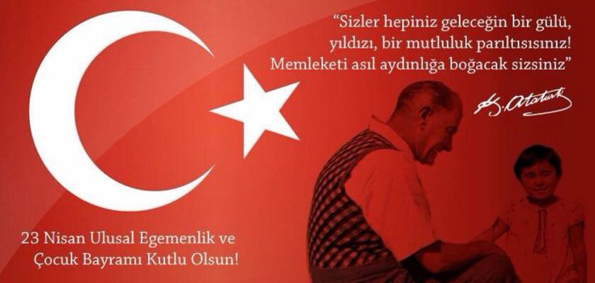

Ulusal Egemenlik Yolu
Tarihçe
23 Nisan 1920 tarihinde Türkiye Büyük Millet Meclisi'nin açılmasıyla, Türk milletinin egemenliği ilan edilmiştir. Bu tarih, Türkiye Cumhuriyeti'nin temellerinin atıldığı ve ulusal egemenliğin simgesi olarak kabul edilen önemli bir dönüm noktasıdır.
Mustafa Kemal Atatürk, bu önemli günü çocuklara armağan ederek, geleceğin teminatı olan çocuklara verdiği önemi göstermiştir.
23 Nisan, her yıl coşkuyla kutlanan ve çocukların bayramı olarak kabul edilen bir gündür. Bu bayram, dünya çocuklarının barış ve kardeşlik içinde yaşamasını temenni eden bir anlayışla kutlanmaktadır.
23 Nisan Nedir? Neden Kutlanır?
23 Nisan Ulusal Egemenlik ve Çocuk Bayramı, Türkiye Cumhuriyeti'nin kurucusu Mustafa Kemal Atatürk tarafından çocuklara armağan edilmiştir. Bu bayram, Türkiye'de ve dünyada çocukların barış, sevgi ve kardeşlik içinde yaşamasını temenni eden bir anlayışla kutlanmaktadır.
23 Nisan, Türkiye Büyük Millet Meclisi'nin açılışının yıldönümü olarak kutlanır ve ulusal egemenliğin simgesi olarak kabul edilir.
23 Nisan Nasıl Kutlanır?
23 Nisan, Türkiye'de ve dünyada çocukların katılımıyla çeşitli etkinliklerle kutlanır.
Türkiye'de okullarda ve meydanlarda düzenlenen törenlerle, çocuklar şiirler okur, dans gösterileri yapar ve çeşitli oyunlar oynar.
Ayrıca, her yıl farklı ülkelerden çocuklar Türkiye'ye davet edilerek, kültürel değişim ve barış mesajları verilir.
